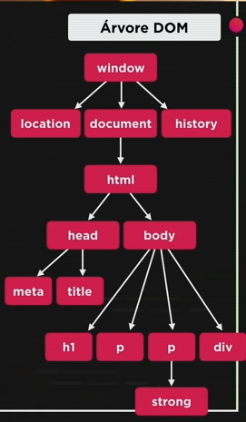

Iremos testar nos exercícios 005 e 006.
DOM é um acronimo para Document Object Model. É um conjunto de objetos dentro do seu navegador que dá acesso aos componentes internos do website. O DOM funciona quando estou rodando JavaScript dentro do meu navegador. Uma coisa importante para saber é a Árvore DOM
A árvore DOM começa pela raiz, e a raiz é chamada de window. Tudo dentro do JavaScript está dentro do window, dentro do window temos vários outros objetos, alguns exemplos são o objeto location (que diz a localização do seu site, URL, página atual, página anterior...), o document (o documento atual), history (guarde de onde você veio, para onde você vai...) etc...
Dentro de document, temos outro objeto chamado HTML, que é exatamente a parte HTML do nosso site. E dentro do HTML, temos dois objetos head e body.
O objeto head e body é filho (ou child) de HTML, e o HTML é pai, ou parent de head e body. Basicamente quem está abaixo é child e quem está acima é parent.
Veja no exemplo a seguir:
Existem várias maneiras de navegar entre os objetos com DOM (todo e qualquer elemento que apareça na árvore DOM). Mas como selecionamos?
Existem várias maneiras de selecionar os objetos, o que aprenderemos nessa aula serão os métodos de selecionar por: marca, D, nome, classe e seletor.
Sintaxe: getElementsByTagName()
Você consegue selecionar mais de um objeto com o getElementsByTagName(), pois existem vários objetos com a mesma tag. Para selecionar a tag que você queira, basta adicionar [n] no final, e dentro o número da tag que você quer modificar, por exemplo: getElementsByTagName()[1]
Sintaxe: getElementById()
Selecionar elementos por ID é muito útil quando seu website é muito grande e tem diversas tags mas você precisa de selecionar só uma, por exemplo.
Sintaxe: getElementsByName()
Sintaxe: getElementsByClassName()
Essa forma é recomendavel pela maioria dos manuais e utilizamos a sintaxe: querySelector() ou querySelectorAll() quando formos selecionar vários objetos.
Ao selecionar por querySelector, utilizamos sempre a sintaxe do CSS, sendo ID = # e class = . ou seja: querySelector(div#msg) para id="msg" e querySelector(div.msg) para class="msg"